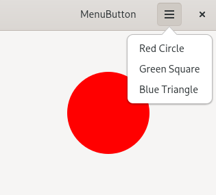
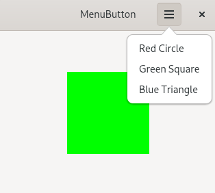
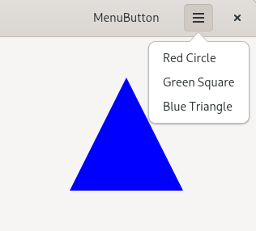

(update:2026/2/18)
ここでは、Gtk::MenuButton に Gio::Menu(MenuModel) を連携させたｻﾝﾌﾟﾙﾌﾟﾛｸﾞﾗﾑを作成します。
Gio::Menu(MenuModel) にメニューの内容を登録(Gtk::SimpleActionGroup)し、その後、Gtk::MenuButtonと結びつけます。
set_icon_name() を用いて Gtk::MenuButton に表示するアイコンをセットします。
Gtk::HeaderBar の右側に Gtk::MenuButton をセットします。
Gio::SimpleActionGroupは、GTK/Gio アプリケーションにおける「アクションの集約・管理コンテナ」として機能するクラスです。
create()メソッドで、Gio::SimpleActionGroup の領域を確保します。
add_action()メソッドを用いて、Gio::SimpleActionGroup に Gio::SimpleAction を登録します。
Gio::SimpleAction は、GTK/Gio アプリケーションにおける「アクション（動作）」を表現するための最小・汎用的な仕組みです。メニュー、ショートカット、ボタン、コマンド実行などを「名前付きアクション」として統一的に扱えるようにするための基盤になっています。
create()メソッドで、Gio::SimpleAction の領域を確保します。
各々のGio::SimpleAction にイベント(signal_activated)が発生したときのシグナルハンドラー(on_action*_activated())を接続します。
insert_action_group() を用いて、Gtk::Window に Gio::SimpleActionGroup を挿入します。
Gio::Menu は GTK/Gio アプリケーションにおける「メニュー構造を記述するためのデータモデル」です。
create()メソッドで、Gio::menu の領域を確保します。
append()メソッドを用いて、Gio::Menu にメニューの項目と Gio::Action の内容を追加していきます。
set_menu_model()メソッドを用いて、Gtk::MenuButton に Gio::Menu を連携させます。
#include <gtkmm.h>
// ===============================
// 図形の種類
// ===============================
enum class ShapeType {
NONE,
RED_CIRCLE,
GREEN_SQUARE,
BLUE_TRIANGLE
};
// ===============================
// ShapeArea（DrawingArea 専用クラス）
// ===============================
class ShapeArea : public Gtk::DrawingArea {
public:
ShapeArea();
void set_shape( ShapeType type );
private:
void on_draw( const Cairo::RefPtr<Cairo::Context>& cr, int width, int height );
ShapeType current_shape = ShapeType::NONE;
};
// ShapeArea メソッド定義
ShapeArea::ShapeArea()
{
set_draw_func( sigc::mem_fun( *this, &ShapeArea::on_draw ));
set_content_width( 320 );
set_content_height( 240);
}
void ShapeArea::set_shape( ShapeType type ) {
current_shape = type;
queue_draw();
}
void ShapeArea::on_draw( const Cairo::RefPtr<Cairo::Context>& cr, int width, int height )
{
cr->set_line_width( 2.0 );
switch ( current_shape ) {
case ShapeType::RED_CIRCLE:
cr->set_source_rgb( 1.0, 0.0, 0.0 );
cr->arc( width/2, height/2, 60, 0, 2 * M_PI );
cr->fill();
break;
case ShapeType::GREEN_SQUARE:
cr->set_source_rgb( 0.0, 1.0, 0.0 );
cr->rectangle( width/2 - 60, height/2 - 60, 120, 120 );
cr->fill();
break;
case ShapeType::BLUE_TRIANGLE:
cr->set_source_rgb( 0.0, 0.0, 1.0 );
cr->move_to( width/2, height/2 - 70 );
cr->line_to( width/2 - 70, height/2 + 70 );
cr->line_to( width/2 + 70, height/2 + 70 );
cr->close_path();
cr->fill();
break;
default:
break;
}
}
// ===============================
// MenuController（アクション専用クラス）
// ===============================
class MenuController {
public:
MenuController();
Glib::RefPtr<Gio::SimpleActionGroup> get_action_group();
sigc::signal<void(ShapeType)> signal_shape_changed;
private:
void on_action1_activated( const Glib::VariantBase& );
void on_action2_activated( const Glib::VariantBase& );
void on_action3_activated( const Glib::VariantBase& );
// 4.1 Gio::SimpleActionGroup の参照ポインタを宣言
Glib::RefPtr<Gio::SimpleActionGroup> action_group;
};
// MenuController メソッド定義
MenuController::MenuController() {
// 4.2 Gio::SimpleActionGroup を生成
action_group = Gio::SimpleActionGroup::create();
// 5.1 Gio::SimpleAction を生成
auto action1 = Gio::SimpleAction::create( "action1" );
auto action2 = Gio::SimpleAction::create( "action2" );
auto action3 = Gio::SimpleAction::create( "action3" );
// 5.2 Gio::SimpleAction のイベントにシグナルハンドラーを接続
action1->signal_activate().connect(
sigc::mem_fun( *this, &MenuController::on_action1_activated )
);
action2->signal_activate().connect(
sigc::mem_fun( *this, &MenuController::on_action2_activated )
);
action3->signal_activate().connect(
sigc::mem_fun( *this, &MenuController::on_action3_activated )
);
// 4.3 Gio::SimpleActionGroup に Gio::SimpleAction を登録
action_group->add_action( action1 );
action_group->add_action( action2 );
action_group->add_action( action3 );
}
Glib::RefPtr<Gio::SimpleActionGroup> MenuController::get_action_group()
{
return action_group;
}
void MenuController::on_action1_activated( const Glib::VariantBase& )
{
signal_shape_changed.emit( ShapeType::RED_CIRCLE );
}
void MenuController::on_action2_activated( const Glib::VariantBase& ) {
signal_shape_changed.emit( ShapeType::GREEN_SQUARE );
}
void MenuController::on_action3_activated( const Glib::VariantBase& ) {
signal_shape_changed.emit( ShapeType::BLUE_TRIANGLE );
}
// ===============================
// MyWindow（UI 専用クラス）
// ===============================
class MyWindow : public Gtk::Window {
public:
MyWindow();
virtual ~MyWindow() = default;
private:
void on_shape_changed( ShapeType type );
MenuController controller;
Gtk::HeaderBar headerbar;
Gtk::Label title_label{ "MenuButton" };
// 1.Gtk::MenuButtonの宣言
Gtk::MenuButton menu_button;
ShapeArea shape_area;
Gtk::Box main_box{ Gtk::Orientation::VERTICAL };
};
// MyWindow メソッド定義
MyWindow::MyWindow()
: controller()
{
set_default_size( 320, 240 );
headerbar.set_title_widget( title_label );
set_titlebar( headerbar );
// 2.アイコンのセット
menu_button.set_icon_name( "open-menu-symbolic" );
// 3.Gtk::HeaderBar に Gtk::MenuButton をセット
headerbar.pack_end( menu_button );
// 6.Gtk::Window に Gio::SimpleActionGroup を挿入
insert_action_group( "win", controller.get_action_group() );
// 7.Gio::Menu
// 7.1 Gio::Menu(MenuModel) を生成
auto menu = Gio::Menu::create();
// 7.2 Gio::Menu(MenuModel) に各menuの内容を設定
menu->append( "Red Circle", "win.action1" );
menu->append( "Green Square", "win.action2" );
menu->append( "Blue Triangle", "win.action3" );
// 8.Gtk::MenuBitton と Gio::Menu との連携
menu_button.set_menu_model( menu );
main_box.append( shape_area );
controller.signal_shape_changed.connect(
sigc::mem_fun( *this, &MyWindow::on_shape_changed )
);
set_child( main_box );
}
void MyWindow::on_shape_changed( ShapeType type ) {
shape_area.set_shape( type );
}
// ===============================
// main()
// ===============================
int main(int argc, char* argv[])
{
auto app = Gtk::Application::create( "menubutton.example" );
return app->make_window_and_run<MyWindow>( argc, argv );
}
| Gio::Menuで連携 | ||
|---|---|---|
| Red Circlue | Green Square | Blue Triangle |
|  |  |  |